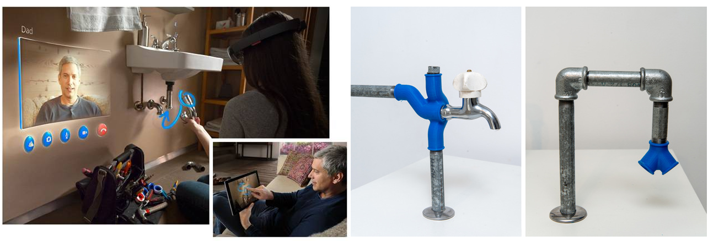
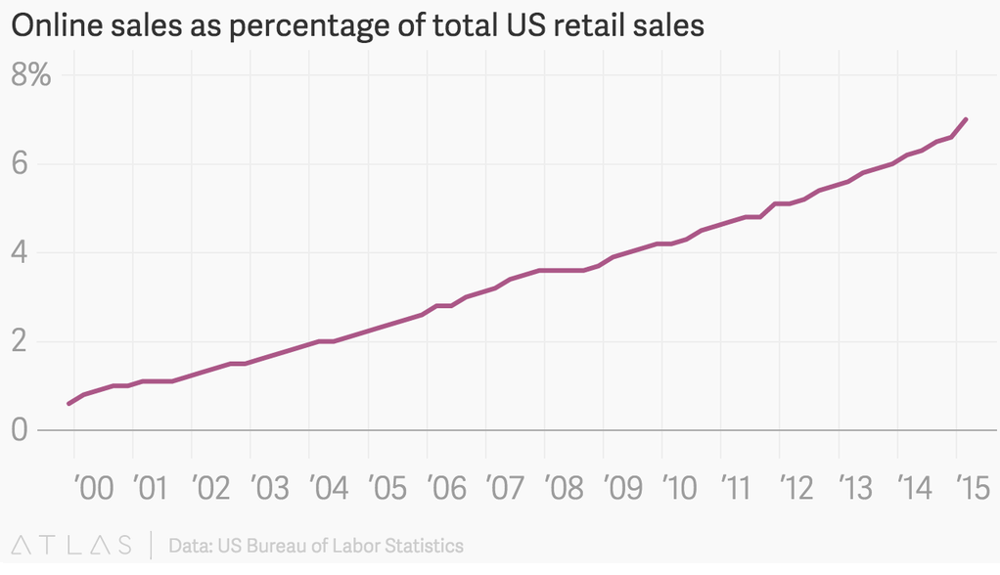
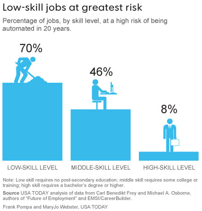

Transport Industry
Self Driving Electric Cars will work 24/7, every day of the year with no breaks, holidays, sick days, lateness, distractions, tiredness, hangovers, complaints, strikes, wage rises, overtime pay, training or retraining, compensation, insurance, severance pay, contract negotiations, bonuses, maternity leave, law suits, require pensions and only demand a ‘salary' equal to the cost of energy. Machines will always follow procedure eliminating human error and bias, be reliable, consistent, won't procrastinate, talk back or unionise, they behave rationally without emotion, they won't commit occupational fraud or harassment to customers.Vehicles transporting goods wouldn't need heat or air conditioning, saving on energy, vehicles in general will have more free space for extra stock or passengers as driver space is not required. The car is becoming a computer technology, it can be easily improved with new software updates, the on-board computers and sensors will continually become cheaper, more powerful, energy efficient and smarter allowing a much safer transportation experience and increasing the rate of adoption over time.
The general public may be slow to adopt but businesses and startups will utilise autonomous Autonomous Vehicles - They will make car sharing programs more prevalent. Similar to how AirBnB allocates people who have a spare room with people who want one, the people who own self driving cars can loan them out to other people who want to use them when they are not needed, such as when the owner is working or asleep. This would allow self driving car owners to make money without doing anything, this may incentivise and increase adoption of self driving cars.
In 2010, Urban areas of the United States contain 80.7% of the population. 51% of americans commute 10 miles or less and 29% commute 1-5 Miles. There has been a large drop in the percentage of 16-39 year-olds getting a license. A study last year found that driving by young people decreased 23 percent between 2001 and 2009. Young people, which prefer to live in cities/urban areas, will be the early adopters of self driving cars. vehicles instantly as they will see the potential to out-compete rivals and increase profits by being able to deliver items and people safely at much lower costs. The robot capital may be expensive at first but should eventually pay off if the cost of employing a human is higher than a machine or software bot over time. Uber is already experimenting transporting goods to people with Cornerstore, a delivery service to compete with Amazon and Google Express. With Uber's almost $50bn valuation stock holders will be expecting Uber to grow so it will have to enter every sector of the transport industry, it will aim to revolutionise the transportation of everything, not just people, and with it's $10bn funding Uber has the resources to create the fleets of self driving cars needed to do so. Uber recently poached 40 of the best scientific minds working at Carnegie Mellon's National Robotics Engineering Center, the vision of it'e CEO who publicly expressed his desire to do so. If Tesla can build a fully-autonomous car by 2020, Uber CEO Travis Kalanick says his company would buy it. In fact, he'd buy every one Tesla builds. Google predicts that by 2020, self-driving cars will be ubiquitous.
This modernisation process is inevitable because company shareholders will look at ways to maximise profits and out compete rival businesses, any opportunity to get an advantage will be capitalised upon. It is in the interest of every company to employ a minimum number of workers, pay them a minimum salary and have the highest productivity. Companies which don’t adapt and stay relevant and persevere with the old way will be left behind. Just like Kodak or Blockbuster, no company wants to make those same mistakes Peter Diamandis - “We grew up with Kodak being one of the mainstay brands of the world. In 1996 Kodak was at the top of their game. It was a 28 billion dollar company with 140,000 employees that 20 years earlier had invented the digital camera, but failed to see the potential of it. In 2012 Kodak declares bankruptcy, effectively disrupted by the very technology that they had invented. They didn’t understand what exponential growth would look like.”
“What’s interesting is that in 2012 Instagram gets acquired by Facebook. They’re also in the digital image business, but they’ve got 13 employees with a one billion dollar valuation. The difference between what is an exponential company and the linear one is this kind of disruption. I call it the new Kodak moment.” and remain stagnant and let other businesses pounce on the new models and technology and let other customers choose their better cheaper and more convenient services. They adapt or face obsolescence.
As of CES 2015, predictions for an on-sale self-driving car are on the order of two to five years away, or 2017 to 2020. one major occupation that is neglected being mentioned is retail staff. The 4 possible scenario's in the near future below will show how self driving cars and a few other new technological innovations can disrupt retail sales.
Scenario 1: Ordering a Smartphone
Let's say you want to order a smartphone but you only want it delivered when you are in the evening or on a Sunday. Currently it's difficult for delivery firms to find drivers to work these hours or days and it may be also difficult for the warehouse to get workers to pick the items and stock them into trucks at those inconvenient, unsociable hours too. Both of these tasks, delivering and picking objects, will soon become fully automated, the machines will happily work day and night, allowing packages to be delivered on demand when it's convenient for the customer.You may have already seen these Amazon Kiva robots which currently move shelves around to speed up the process of locating and packaging an item.
Amazon is now working on automating the next step in getting various items from shelves using robots pickers for its fulfilment warehouses
This is currently very slow but it will quickly improve in performance as computing power, vision and AI algorithms, sensors and gripper technology improve. An example of how fast a speed up with better technology is Rethink Rebotics Baxter Robot.
The baxter robot then places the item into the self driving car, the self driving car can be customised to use a locker system to dispense goods.
So in this scenario a smart phone is ordered to be delivered at 8pm on Sunday, a Kiva robot delivers the shelf to a robot picker which grabs the item and puts it on an automated conveyor belt where its gets packaged by a Baxter robot and then placed into a self driving "vending machine" van. The custom delivery van autonomously drives to outside your front door. You receive a notification that it's arrived and go out to the car, you enter a pin code on the van or some other form of self service authentication and your parcel appears for you to collect. All with minimal, if no, human involvement.
Scenario 2: Ordering Clothes
Picture this 2nd scenario, it's a friends wedding, you are all dressed up and ready to go but you spill something and stain your suit/dress. Let's say it's a Sunday again and you have nothing else to wear, the shops are shut and your tailor/dress fitter is busy, what do you do?Phones are starting to get 3D scanning abilities and in the future 3d cameras built in as the sensors become so cheap and advanced in projects like Google Tango. Someone will create an app where you can 3D "selfie" scan yourself to get the precise measurements of your body and a 3D model which you can dress up.
You could virtually try on clothes by easily and quickly swiping through a websites clothing section, to see what you look good in, advanced computer algorithms could even suggest what you clothes would suit you or go well together. No lengthy queues for changing rooms or hassle removing and putting on clothes repeatedly, or taking things back because they don't fit, just faster, more convenient clothes shopping.
Microsft Holo lens, Google Glasses 2.0 and other augmented reality tech will become cheaper, better and more prominent. They will transform your physical world, when looking in a mirror you could see different clothing on you. The same could be done for furniture in the home, new wallpaper or the vast amounts of items where you are apprehensive about will it fit or look right, in the future you will be able to virtually see an item in the physical world before you buy it.
An automated warehouse doesn't need prime location retail estate so has less rent, doesn't need to be lit up, heated or cooled, dosent need toilet or staffroom facilities which take up space so cheaper bills and more room for stock. In a structured warehouse, stock doesn't need to be displayed for customers so can be stored efficiently, it doesn't need to constantly move from backroom to front of store and staff are not needed to face up items. Soon robots will be capable of stacking shelves with the items that are delivered from manufacturers on to shelves automatically.
Online items tend to already be cheaper and the trend may increase as the cost savings mentioned above will allow the online store to undercut the brick and mortar store in sale prices of items. Higher convenience for customers, better tech to try and look at goods before you buy and cheaper items will increase online sales.
The high street will be at your front door, no travelling to shops, having to find the item, avoid people, queue, carry it back home and other inconveniences. Most goods are cheaper online, the only thing holding online shopping back today is the long wait for goods and inconvenient delivery times which looks to be eliminated soon. Brick and mortar will have stiff competition with this level of convenience as the virtual shop becomes far superior to the physical shoping experience.
Amazon CEO Jeff Bezos, whose personal wealth makes him the fifth richest person in the world with a net worth of $50 billion has plans to grow Amazon even more. "In its Q2 earnings this week Amazon’s value pushed north of $250 billion — some $20 billion more than Walmart. Don’t expect Bezos to be content to stop there though. Amazon’s vast vision really is about flipping commerce on its head, and bringing the fruit market, the high street and the changing room — the whole kit and caboodle — into the living room." - TechCrunch
Scenario 3: Ordering Tools
Many retail stores may suffer from disruption due to 3D printing. This example uses a DIY retail store. Let's say you don't have a wrench, missing an ikea screw or trying to DIY fix your sink. You can get remote help using to diagnose the problem, if you are missing tools to fix your sink then a home 3D printer will allow you to print the correct size valve, pipe or spanner.
3D Home Printing is set to increase. It is expected to double every year, from almost 62,000 in 2013 to nearly 2.5 million in 2018. The performance of 3D manufacturing is improving. The range of materials that can be used in 3D manufacturing is expanding and the prices (for both printers and materials) are declining. People will buying(or "aquiring", if the music and film industry is anything to go by) product designs and be printing them at their own home cheaply and repeatedly, causing even more disruption to retail.
Now this example assumes people have 3d printers in the home, which may take a while for majority of consumers to adopt, but like the self driving cars, it will be companies which adopt and utilise new technology first. Amazon already has a patent to 3D print items inside trucks. They could merge advanced industry 3D pinters such as HP's multi jet 3D fusion printer or VoxelJet's VX2000 industrial 3D printer, with self driving cars, very soon we will have fully automated, mobile, manufacturing.
3D printers allow you to print many other materials other than plastic, they can print metal, wood, ceramic, carbon fiber, graphene, clothing, food, glass, optics for use in lenses and even electronics. 3D printers are continually getting cheaper and faster.
Scenario 4: Ordering Grocery's
It's 5pm, you just got home from work and need to start cooking a meal but you realise you are missing some ingredients, currently you would have to nip to the shops to carry on but maybe you don't have time or just don't want to travel to them.The ice cream van can now become automated and other products could start to be sold in a similar model as running cost's become cheaper. Picture self driving mobile vending machines as described earlier, driving around stocked full of the most common bought goods, nipping to the shop for some bread, milk, beer etc. could become a thing of the past as corner shops become mobile.
If the mobile convenience store doesn't have the item then it could get to you from the warehouse. Self driving cars and automated warehouses will deliver items to you within the hour (e.g. Amazon Prime Now) much cheaper than today because a driver and warehouse staff wages won't be needed.
But maybe 1 hour is not fast enough for you, luckily you will soon be able to get ordered items incredibly quickly by flying to your location. Amazon are aiming to use drones to get items to you in less than 30 mins and they may be available within the year. Another way retail could be slightly disrupted, similar to the 3D printing in delivery trucks, could be cooking in delivery trucks, imagine these robot car chefs dropping off ready cooked meals cheaply to you mean less visits to grocery shops for ingredients if the service becomes affordable/popular.
The internet of things will allow you to have a smart fridge which could have cheap camera sensors to recognise bar codes or objects without barcodes such as fruit or veg. Once the smart fridge knows it's contents, it will know when it's running short and will ask you if it should order more. Like an advanced version of Google Now or Siri, the smart fridge will learn about your tastes over time, it will know what ingredients and food you like and will scour different online stores and notify you off deals. The weekly huge food shopping experience may become a thing of the past as smart AI develops the perfect shopping list tailored for you and automatically orders it for you.
Another way technology may change shopping habits is items like Amazon Echo where you can order just by speaking and it will pick it up, "aww I'm out of eggs" can turn into "Alexa, order some eggs" and they will be with you within 30 mins by use of a drone.
You can already order things on demand with smartphones and now smart watches, you are now always connected to online digital stores. More use of the interner of things such as Amazon Dash, will allow you to rapidly order common items when are you running out.
The next generation of smart watches will improve it's bio-sensors and gain better health data like Apple Health is currenty. They will track your body vitals and suggest meal plans to improve it such as preventing vitamin deficiencies or reducing salt/fat intake. Meal plans can be automatically ordered for you, improving your health and saving you time having to shop and count calories and check nutrition and worrying about if what you buy is healthy. All these features will make online ordering more streamlined and natural. Why make the trip to the mall, spend gas, use up your free time, where in the time it would take you to get back from the mall the item could already be with you and cheaper than in store if you just stayed at home and ordered it online?
Conclusion: Retail vs Online Shopping in the Future
Online sales has been steadily increasing, it is now at about 7% in 2015. This figure is already expected to steadily increase but with the scenario's explained above it could sharply rise and impact retail sales and the jobs that go with it.
Other technology could disrupt retail jobs. As shown in the Amazon picking challenge, how long until the reverse is possible and robots can stack shelves or face up isles? Dexterity will improve, prices will go down, speed will increase, possibly impacting the need for as many human shelf stackers within the next 20 years, bearing in mind the exponential rate of computer power which drives improving computer vision AI.
We have already become familiar with self service tills in grocery stores but these are soon to enter general retail, substantially reducing the need for as many checkout staff. Soon shops won’t even have to buy as many costly self checkout machines or hire cashiers as self scan apps
 Self scan apps -
Tesco appears to have taken notice and has rolled out four high-tech checkouts
in its Lincoln store. It enables three shoppers to pack and pay at the same time
and ensures that the scanner will pick up item barcodes more easily. Grocer Asda
recently launched a smartphone scan-and go-trial at its superstore in York which
will allow customers to scan basket items via its app and pay at any till without
unloading their trolley.
using Apple and Google pay are about to enter the market.
In the future a person will be able to walk into a shop, grab an item,
scan it with
their Apple watch and walk out the store with it,
eliminating queuing time and offering
maximum
convenience
Convenience -
Using big data and wifi connections the shop will know who you are and what you like
when you walk in and offer you deals sending a notification to your smartwatch with
directions to dynamically priced goods which are on offer to you personally.
Self scan apps -
Tesco appears to have taken notice and has rolled out four high-tech checkouts
in its Lincoln store. It enables three shoppers to pack and pay at the same time
and ensures that the scanner will pick up item barcodes more easily. Grocer Asda
recently launched a smartphone scan-and go-trial at its superstore in York which
will allow customers to scan basket items via its app and pay at any till without
unloading their trolley.
using Apple and Google pay are about to enter the market.
In the future a person will be able to walk into a shop, grab an item,
scan it with
their Apple watch and walk out the store with it,
eliminating queuing time and offering
maximum
convenience
Convenience -
Using big data and wifi connections the shop will know who you are and what you like
when you walk in and offer you deals sending a notification to your smartwatch with
directions to dynamically priced goods which are on offer to you personally.
There could be increased security concerns such as shop lifting but these could be managed too by new technology. Shops could use advancing image recognition to recognise your face when you enter and tracking software could be used to spot thieves that leave with items not paid for or added to virtual baskets. for the customer, and for the company.
Human assistance can already be achieved with customer service robots OSHbot - The OSHbot will greet customers, ask if they need help and guide them through the store to the product. Besides natural-language-processing technology, the 5-foot tall white robot houses two large rectangular screens—front and back—for video conferences with a store expert and to display in-store specials.
The head features a 3-D scanner to help customers identify items. OSHbot speaks English and Spanish, but other languages will be added. are already helping humans in shops. Instead of a robot an app could be used to help customers.
Cleaning robots may be with us within 20 years, making retail staff more productive, requiring less of them.
And finally the manager/supervisor could be disrupted by an advanced Siri or IBM's Watson, connected to internet of things in a modernised shop 2.0 which is constantly getting sensor data from everything and using a super smart AI to understand it all. It will have advanced vision and computing power to understand scenes like messy isles, unkempt displays and be able to automatically delegate tasks to employees(or robots) to fix the problems it sees. It can use machine learning on customers visits and patterns each day to create rota's, order new stock, info to assigning tasks, performing accounting. Similar to how Amazon in walking picker roles used to be tracked and told where to go by a computer, and told to speed up if going too slow, a system could take place in a shop where employees are hooked up to a headset with Siri or some other software bot bossing them around. "You are needed on till, vegetable dates need to be checked, clean the floor, face up isle, customer looks lost, go assist them...etc" A super efficient shop would need less staff if everything is optimised and staff are moved to zero hour contracts and the ai "boss" emails employees when they are needed.
Just like how Uber has turned taxi employees into independent contractors and refuses to treat them as “employees” so it doesn’t have to pay minimum wage, Obamacare health insurance, unemployment insurance, no guarantee of stability, worker’s compensation or pensions, this kind of employment could infect many other occupations as companies look to cut cost to compete with C. If a freelancing app is created for retail, the staff that remain will face less employment benefits, less full time employment opportunities and more competition for their roles which could go to the lowest bidder, pushing down wages.
A 2013 report estimates that roughly a third of the US workforce, more than 40 million, consists of temps, part-timers, contractors, contingent workers, freelancers/independent workers and those who are under-employed or work without employer-sponsored health insurance, 401Ks or FLEX accounts” according to a report by the Harvard Business Review. By 2020, 40 percent of the US workforce will consist of freelancers according to a study by Intuit. A study by Deloitte found Canadian organizations are reaching out to the “open talent economy.” 47% of Canadian respondents plan to increase their use of contingent, outsourced, contract or part-time workers in the next three to five years. 80% view workforce capability as an important trend—and 53% see it as a long-term priority for their organization."
"Traditional employment will no longer be the norm. replaced by contingent workers such as freelancers and part-time workers. The long-term trend of hiring contingent workers will continue to accelerate with more than 80% percent of large corporations planning to substantially increase their use of a flexible workforce."
The pressure and competition from online stores may push physical retailers to make these cost cutting decisions, especially with minimum wage increases. With all this new information about the potential disruption retail staff face it is quite startling when you find out what the two most popular US occupations are. This chart below of the occupations Federico Pistono- Take a good look at the table above. Now answer this: how many occupations were created in the last 50 years? The 34 occupations listed above make up 45.58% of the US Workforce. How many new jobs were introduced because of the advances in technology? The answer is only one: computer and software engineers. This profession barely makes it into the list at all. In fact, if we were to exclude the bottom two, we would still have 44.12% of the economy represented, and not a single type job was created in the last 50 to 60 years.
The reality is that the new jobs created by technology employ a very small fraction of people, and even those jobs tend to disappear soon after they are created. Think of the jobs created in the IT industry in the 1980s, and how many of them survive to this day in 2012. If you were a programmer back then, or a system administrator, and you did not study and learn the latest developments, it would be very hard to find a job for you today. How many occupations were created because of the introduction of a new technology, only to disappear because an even newer technology came along? with the largest employment in 2012.
The 2 most popular are retail sales people and cashiers with almost 8m jobs, #15 also has 1.6m jobs. Retail workers have a median age of 38 in 2011, Retail are not jobs which only employ teenagers as many falsely believe. They are not stepping stone jobs that people do until they find something better. These are the most popular jobs in the country, vast amounts of people and families rely on these jobs. Teenagers may struggle to get onto the skills ladder or their first bit of work experience or part time work to get through college if less retail or fast food delivery jobs are availible, and the remaining face increasing competition, pushing pay to an absolute minimum, if it wasn't already. If there is even a small percentage of jobs cut this can cause a big disruption effect for many people.
As well as retail we can now be fairly certain that these occupations will experience job disruptions over the next 20 years due to autonomous vehicles, as companies will be very quick to adopt and utilise these cost saving advantages.
-
- Taxi and Bus Drivers
Cheaper than owning a car -
One study found, for example, that an average 2-mile taxi trip in New York City costs
One study found, for example, that an average 2-mile taxi trip in New York City
costs $8 to $13, depending on traffic conditions. It estimated that a fleet of
9,000 driverless cars could replace the city’s fleet of Yellow Cabs and operate
for an average of 80 cents for a 2-mile trip. A more than 10-fold difference.
Taxi's get an extra seat availability as driver not present.
They can garner more efficient operation and use less gas by sending custom number of seat taxis for customers current needs. If computer route planning algorithms which find other people to share the ride with, similar to how UberPool works, then the fare could be even cheaper. -
- Truck and Delivery Drivers
 Cheaper Delivery -
Trucks can travel continuously, no breaks, holidays or sick days, less logistic route
or shift planning required, more time on the road. Most people would like items delivered
when they are home, companies won’t have to worry about getting staff to work evenings,
could have a custom delivery van wait outside which sends an alert to you to collect
package, could also combine with Amazon Air.
Cheaper Delivery -
Trucks can travel continuously, no breaks, holidays or sick days, less logistic route
or shift planning required, more time on the road. Most people would like items delivered
when they are home, companies won’t have to worry about getting staff to work evenings,
could have a custom delivery van wait outside which sends an alert to you to collect
package, could also combine with Amazon Air.
Diners, motels, gas station shops, places that are just businesses along the highway will lose customers as less truckers driving on highway having to stop off at towns overnight or for food. -
- Car Manufacturers and Car Salesmen
Car Manufacturers -
A car is often a person’s second largest capital expenditure, after a home, yet a car sits
unused some 90% of the time. Optimising use of cars will mean less need to be made Columbia
University's The Earth Institute forecasts the reduction of United States' fleet of vehicles
by a factor of 10.
The average number of vehicles per American household is currently 2.1. According to the study, that could dip as low as 1.2, a reduction of 43%, if self-driving cars become a reality and people take advantage of it as expected. 42% of American households need two cars today. If and when self-driving models are here, however, only 15% would need two vehicles available. The need for three or more cars would plunge as well, from 26.5% today to less than 2% in an era of self-driving cars that could “return-to-home” when the need arose. -
- Mechanics
Mechanics -
following on there being less cars being made then less maintenance work
would be needed such as yearly MOT's. Less car repairs
are required due to reduced number of crashes and less vehicle modifications
due to less people owning cars.
Public transport will become more of a viable option for people. as bus companies can afford to run more services. Also with tracking software similar to Uber cars people can plan their journeys better. A google maps integration which has every car on the road connected to waze, calculates how long until the bus will be at the stop nearest to you accurately and notifies when you should leave to catch the bus to work, no more waiting around in, almost on demand public transport allowing more convenience for people. If 20 people ditch their car for a bus then thats less mechanic work. -
- Doctors/Surgeons/Lawyers/Insurers
Safer Cars -
autonomous cars would be much safer, eliminate accidents cause by drunk driving
and human error. Some professions would have less work to do as less injuries to
drivers and pedestrians, would result in less insurance claims or injury lawsuits
and medical need.
Self Driving Electric Cars are no longer just mechanical, they are a digital device and will follow morse law, we shall see computing technology improve approximately 10,000 fold over the next 20 years and this will apply now to car technology. The affordability of autonomous driving systems will improve dramatically. A car you buy can continually improve due to software upgrades over the internet and become safer each update. -
- Traffic Cops, Driving Instructors and Parking Wardens
 Follow road rules -
people are not driving so don’t need to learn, cars will follow the
road rules so will not speed or drink drive as often
They will not need to park if ride sharing schemes become prevalent.
Follow road rules -
people are not driving so don’t need to learn, cars will follow the
road rules so will not speed or drink drive as often
They will not need to park if ride sharing schemes become prevalent.
-
- Train and Plane Industry
Faster On Demand Travel -
may lose some customers as self driving cars can travel faster,
Broggi believes that, “speed limits of up to 100 miles/hour (160 km/hour) are
absolutely possible by 2040.
Think of custom cars with TV's, game consoles or beds in, people will prefer not having to share journeys with other people(crying babies). Would allow people more comfort, ability to recline chair back or more space for leg room. Allows you to leave for your destination whenever you want, no more set times, schedule your self driving car to pick you up at any time or day, more convenience.
Driverless car research may also enable train drivers, pilots and boat operators to be replaced.
If retail people suffer even a 25% decrease in sales due to increasing online activity and 25% machine replacement, that's roughly 4m of the 8m retail jobs gone. Combined with all the driving jobs described above that is a lot of disruption within 20 years. Many other low skilled jobs are at high risk of being automated and low skilled workers will struggle to find jobs if less low skilled work is available, gaining an entirely new advanced skill set is difficult and is currently very expensive and time consuming. How do you begin to take the median aged retail worker at 38 who hasn't looked at a maths text book in other 20 years and turn them into a data scientist or engineer. How does the average aged 55 year old truck driver pay for their housing, family, elderly relatives care cost's, college cost's, rising living expenses and bills etc. while re-skilling. If they can't re-skill how do they survive until retirement with no work available, what happens to their children?

In the full article I show how every industry and major sector faces disruption from smarter, cheaper and more powerful digital and robotic technologies, more global competition, new outsourcing technology and changing models of employment. I also explain the solutions to ease the disruption and prevent unnecessary suffering if this coming exponential disruption is not handled well.
Read Full Article on Exponential Disruption
Go to top
About
 Website created by
Website created by Nathan Leigh
Website tools created by Mary Lou.
Picture of my cat Kizzy on the right.